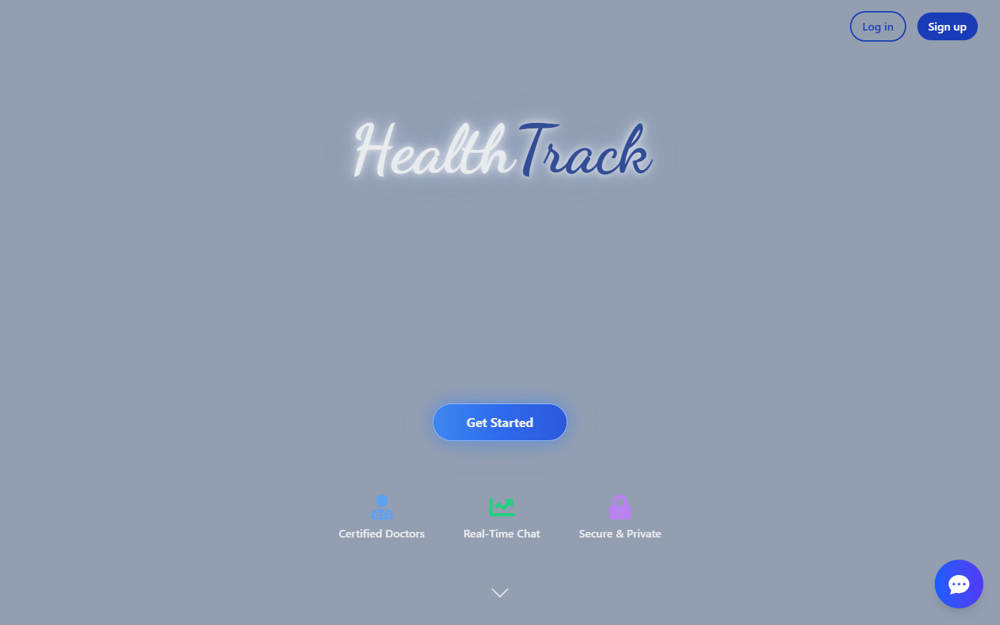
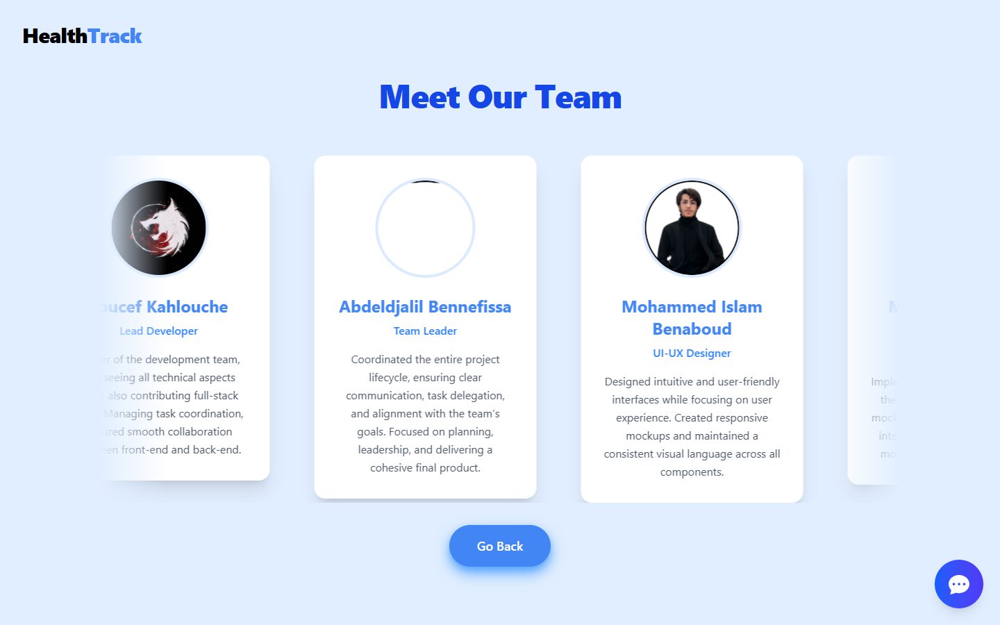
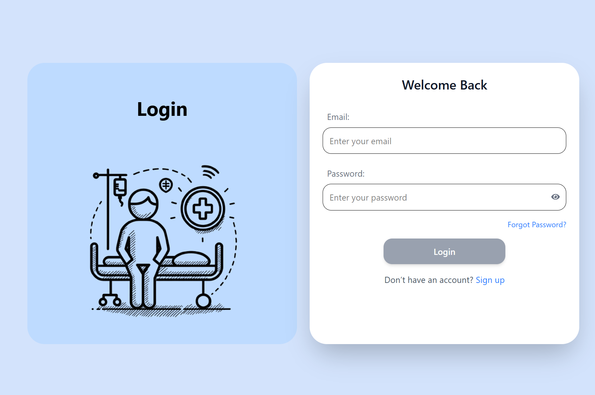
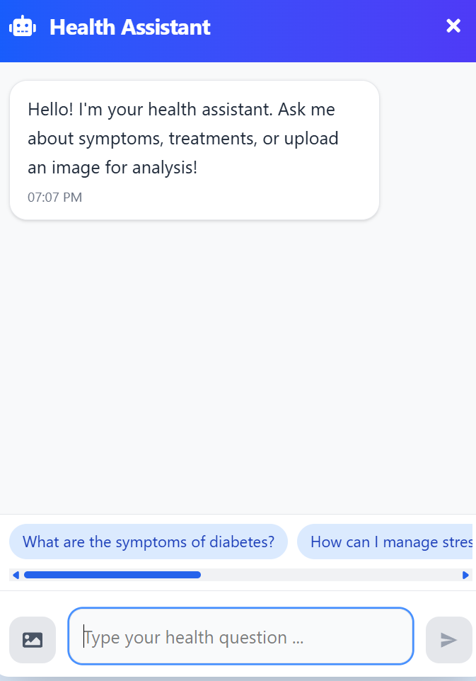

HealthTrack
An online medical appointment booking experience designed to make discovering doctors and scheduling appointments simple and intuitive for patients and clinics.

Simplifying medical booking
HealthTrack is a healthcare discovery and appointment scheduling platform. It simplifies doctor discovery for patients while offering clinic staff a streamlined dashboard for scheduling and patient management.
Friction in finding & booking healthcare
Finding the right doctor and managing appointments is often frustrating for patients due to unclear availability, endless phone calls, and complex clinic schedules. On the provider side, clinics deal with scheduling conflicts and missed appointments.
Connecting patients and clinics
HealthTrack bridges the gap between three primary user groups:
Streamlined multi-step booking journey
The booking process was redesigned into a linear 3-step path to prevent drop-off: Search → Select Time → Confirm.
Key UX considerations
Card-based doctor cards
Grouped doctor rating, location, specialty, and next available slot into scannable cards to aid quick decision making.
Instant time slot selection
Replaced drop-down time selectors with visual pill chips showing live morning/afternoon slots.
AI Chatbot assistance
Embedded a floating assistant to answer common clinic queries and help patients find specialties.
Building trust through design
The visual direction conveys hygiene, clarity, and medical trust.
Trust & Growth Palette
Medical blue and crisp whites to evoke trust, hygiene, and calmness, accented with soft greens.
Clean Typography
Highly legible sans-serif typefaces ensuring readability for users of all age groups.
Card-Based Layouts
Structuring doctor details and schedules into distinct cards to reduce cognitive load.
Friendly Iconography
Approachable icons to make navigating healthcare services feel comfortable and reassuring.
The finished platform
The Main Landing Page
A clean, welcoming introduction to HealthTrack, highlighting its core features and ease of use.
Search & Discovery
A powerful search interface that lets patients quickly find specialists and available appointment slots.

Authentication
A simple, secure sign-in process designed to get patients into their accounts quickly.

AI Assistant
An integrated chatbot widget to assist patients with navigation and basic queries.

Key learnings
Friction reduction
Simplifying healthcare booking taught me how minimizing input steps directly improves user trust and completion rates.
Accessibility in HealthTech
Designing for diverse age groups reinforced the importance of contrast, large touch targets, and clear button hierarchy.